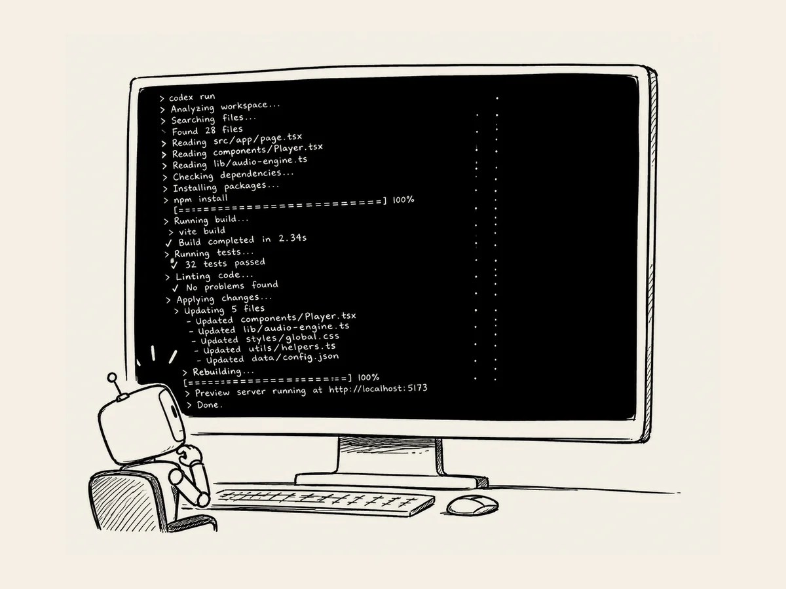

18.
영화 같은데 난 뭔지 모른다.
VS Code에서 Codex를 실행시키면
화면에 알 수 없는 문구들이 쭉쭉 올라간다.
영어도 나오고,
숫자도 나오고,
파일 이름도 나오고,
뭔가를 찾고 고치고 또 실행한다.
가끔 가만히 보고 있으면 영화 속 한 장면 같다.
해커가 컴퓨터 앞에 앉아서
검은 화면에 복잡한 명령어를 미친 듯이 입력하는 그런 장면.
그런데 결정적 차이가 있다.
나는 몇 줄 타이핑하고, Ctrl+C 복사할 뿐이다.
대부분을 AI가 한다.
문득 그런 생각이 들었다.
“AI가 없던 시절에는 저걸 사람이 하나하나 직접 했다는 거잖아?”
생각만 해도 아찔하다.
더 재미있는 건
나는 지금 화면에 올라가는 저 문구들이 무슨 뜻인지 거의 모른다는 것이다.
물론 굳이 궁금하면 복사해서 AI에게 물어보면 된다.
“이게 무슨 뜻이야?”
그러면 친절하게 설명해준다.
그런데 몇 번 해보다가 그만뒀다.
TV를 보기 위해 TV를 뜯어볼 필요는 없다.
굳이 알 필요가 있나?
